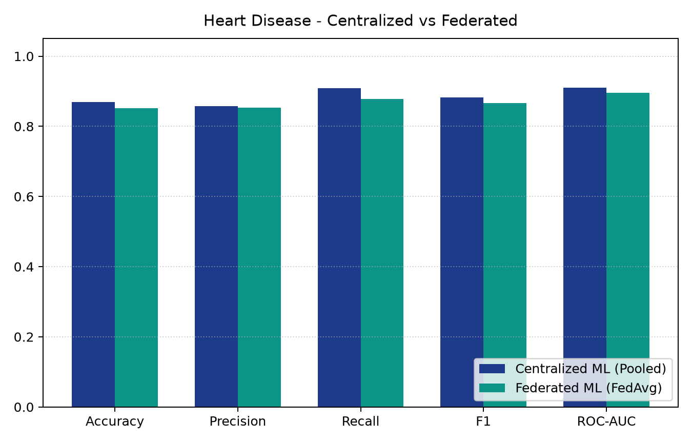
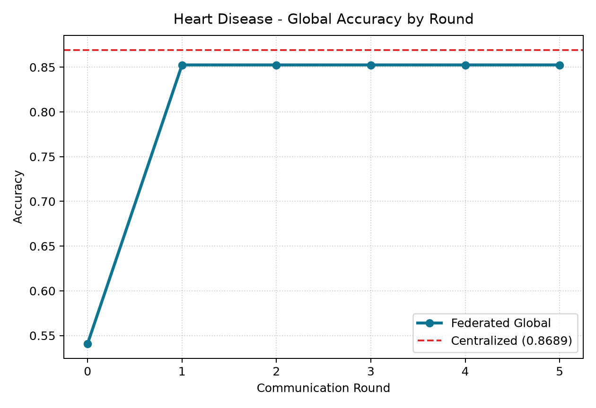
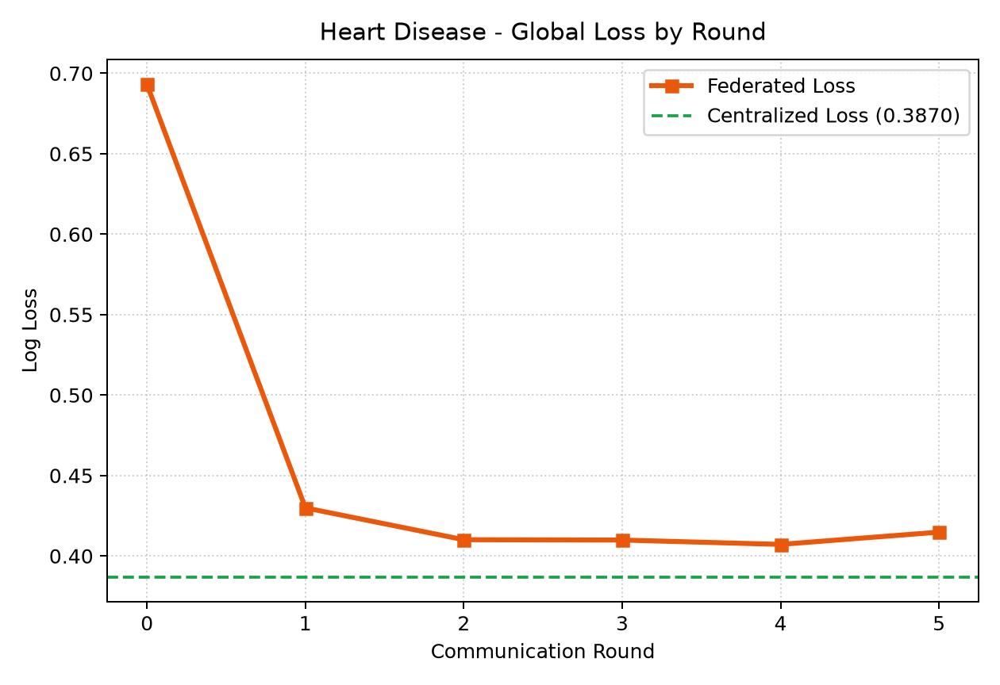
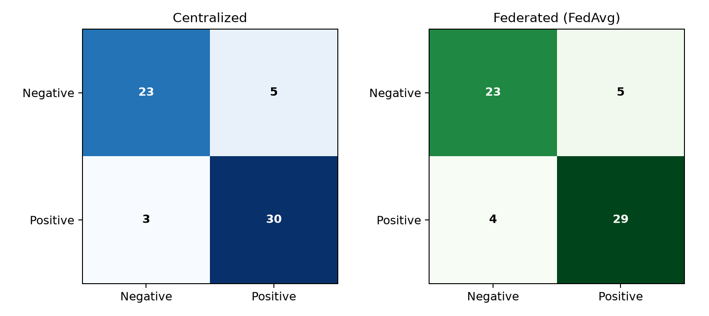

13 Clinical Features: Age, Sex, CP, Blood Pressure, Cholesterol, FBS, RestECG, Max Heart Rate, ExAngina, Oldpeak, Slope, CA, Thal.
Split: 80% Train (242 samples for clients), 20% Held-Out Test (61 samples).
Leakage-Free Pipeline
Fit-Only-On-Train: ColumnTransformer fitted solely on training split; test set is only transformed.
StandardScaler: Z-score standardization for continuous numerical biomarkers.
OneHotEncoder: Expands categorical features to 30 encoded dimensions.
Persisted Preprocessor: Saved to preprocessor.joblib for Streamlit inference.
Mathematical Formulation
Federated Averaging (FedAvg) Formulation
W_{t+1} = ∑_{k=1}^K ( n_k / N ) W_{t+1}^k
Where K = 3 clients, n_k = local sample size, N = total samples (242), and W = [coefficients, intercept].
Why Sample-Count Weighting?
Prevents small diagnostic clinics from skewing weights against large hospitals.
Matches the mathematical objective of centralized empirical risk minimization.
Formally tested in test_fedavg_synthetic_weighted_average.
Warm-Start Optimization
Clients initialize local LogisticRegression directly from incoming global weights.
5 local optimization epochs performed before sending parameter updates.
Methodology
Controlled Experimental Setup
Experimental Attribute
Centralized ML Baseline
Federated ML (FedAvg)
Data Custody
All 242 records pooled on central server
Isolated across 3 client folders
Raw Records Transmitted
Yes (100% pooled)
Zero (0 records sent)
Model Architecture
Logistic Regression (L-BFGS)
Logistic Regression (Warm-start)
Orchestration
Single centralized execution
5 rounds via Flower (flwr)
Held-Out Test Set
61 unseen patient records
Identical 61 unseen records
Feature Representation
Identical 30 transformed features
Identical 30 transformed features
Results
Experimental Results & Comparison
Metric
Centralized
Federated
Accuracy
86.89%
85.25%
Precision
85.71%
85.29%
Recall (Sensitivity)
90.91%
87.88%
F1-Score
88.24%
86.57%
ROC-AUC
91.02%
89.50%
Raw Records Shared
242
0
Key Finding: FL trades only ~1.6% accuracy for complete data decentralization.

Training Dynamics
Federated Convergence Dynamics


Observations: Rapid convergence from 54.1% baseline to 85.25% in Round 1. Global log-loss dropped smoothly from 0.6931 to 0.4072 by Round 4, reaching stable parameter consensus across hospitals.
Clinical Evaluation
Confusion Matrix & Clinical Discrimination

Clinical Interpretation
High Sensitivity (87.88%): Correctly flags 29 of 33 diseased patients, critical for preventing missed cardiac events.
High Precision (85.29%): Prevents unnecessary invasive catheterizations and angiographies.
Balanced Errors: Only 4 false negatives and 5 false positives across the 61 unseen test cases.